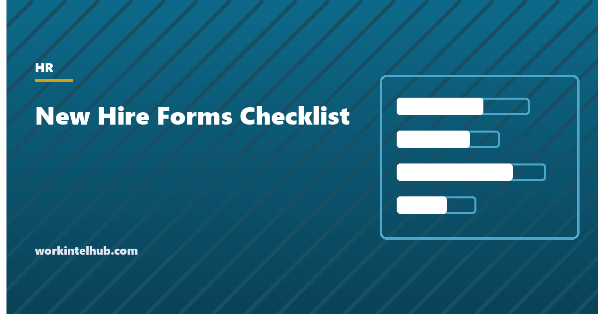

New Hire Forms Checklist

New hire paperwork is a short list of federal forms with hard deadlines, a longer list of state forms that depend on where the person works, and a set of company documents that exist to prove later that something was explained. Two of the federal deadlines carry penalties per form: Form I-9 Section 2 within three business days of the start, and the state new hire report within 20 days. Most compliance failures are not exotic. They are an I-9 completed on day five or a new hire report nobody filed.
The checklist below dates every item from the start date and adds the state-specific forms for the states that have the most of them. The rest of the page explains each form, what happens if it is late, and how to organise the files so an audit is a filing exercise rather than a search.
Interactive new hire forms checklist
Progress is stored in this browser only. Deadlines are calculated from the start date; "day 1" is the first day of paid work. Items marked with the state code appear only for that state.
The federal forms and their deadlines
| Form | Who completes it | Deadline | If missed |
|---|---|---|---|
| Form I-9 Section 1 | Employee | No later than the first day of work for pay | Civil penalties per form for paperwork violations, higher for knowing violations; the penalty schedule is inflation-adjusted annually |
| Form I-9 Section 2 | Employer, examining original documents | Within three business days of the start date (same day if the hire is for fewer than three days) | The same penalty schedule; late completion must be dated truthfully, never backdated |
| Form W-4 | Employee | Before the first payroll | Withhold as single with no adjustments until it arrives |
| State new hire report | Employer | Within 20 days of hire under 42 U.S.C. 653a; several states require it sooner | State civil penalty per unreported hire, higher where the failure is a conspiracy with the employee |
| E-Verify case | Employer, if enrolled | No later than the third business day after the start date | Breach of the memorandum of understanding; required for federal contractors with the FAR clause and in several states |
The I-9 is the form that generates the most audit findings, and the findings are usually clerical: a missing signature, a document title left blank, Section 2 dated after the deadline, an expired form version. Use the current edition from USCIS, complete it on the day, and store all I-9s together, separate from personnel files, so an inspection notice (which gives three business days to produce them) can be answered without opening every file. Employers enrolled in E-Verify may use the alternative remote document examination procedure; everyone else must examine originals in person.
New hire reporting exists to support child support enforcement, and the state directories feed the national one. Most payroll providers file it automatically, but "most" is the problem: confirm it is switched on for each state where you have employees, and confirm that rehires after 60 or more days are reported again.
State forms that vary
Most of the variation is in four areas.
- State withholding. States with income tax mostly have their own certificate (California DE 4, New York IT-2104, Illinois IL-W-4, and so on). A few accept the federal W-4. The nine states with no wage income tax need nothing.
- Pay notice at hire. New York requires a signed Notice of Pay Rate for every employee; California requires the Labor Code 2810.5 notice for non-exempt employees; around a dozen other states require some written notice of rate and payday. Our offer letter page lists them.
- Sick leave and workers' compensation notices. States with paid sick leave laws usually require a notice at hire, and several require a workers' compensation rights pamphlet (California's Time of Hire notice is the best known).
- Required training. Harassment prevention training is mandatory in California (within six months of hire, then every two years), New York (annually), Illinois (annually), Connecticut, Delaware, Maine and Washington for certain roles, with different content rules in each.
The rule that catches multi-state employers is that the forms follow the employee's work location, not the company's headquarters. A remote hire in New York triggers the New York notice and training regardless of where the company sits, and it also triggers a state payroll registration if it is the company's first New York employee.
Company documents worth having signed
- Handbook acknowledgment. The signature is what proves the employee received the policies, including the at-will statement and the complaint procedure. Our employee handbook page covers the disclaimer and acknowledgment wording.
- Confidentiality and invention assignment. Signed before or on day one, because consideration for it is the job itself. Signed later, several states require fresh consideration.
- Direct deposit authorisation. With a voided check or bank letter. Several states prohibit making direct deposit a condition of employment, so keep a paper check option.
- Emergency contact. Kept apart from the personnel file, because it is personal data with no employment purpose beyond the emergency.
- Job description acknowledgment. Signs off the essential functions; our job description builder adds the line.
- Timekeeping and break acknowledgment for non-exempt staff. That they will record all time worked, take the meal and rest breaks the state requires, and report any missed break. This single page defends more wage claims than any other.
- Equipment receipt. What was issued, with serial numbers, so the offboarding return is a comparison rather than a memory test.
How to file it
Three folders per employee, physical or electronic. The personnel file holds the offer letter, job description, acknowledgments, performance records and pay changes. The confidential file holds anything medical or protected: accommodation requests, leave certifications, benefits enrolments, background check results, and the emergency contact. The I-9 folder is company-wide, ordered by hire date, with terminated employees' forms held for the later of three years from hire or one year from termination and then purged.
The separation matters because different people are entitled to see different things. A manager reviewing performance should never see the medical file. An ICE inspector sees I-9s and nothing else. An employee exercising a state right to inspect their personnel file sees the first folder. Mixing the three is how a manager comes to know about a diagnosis, which is how a discrimination claim acquires its knowledge element.
Once the forms are in, the person is hired. The onboarding checklist takes over from there, from the first-week plan to the 90-day review.
Key takeaways
- Two federal deadlines carry per-form penalties: Form I-9 Section 2 within three business days of the start, and the state new hire report within 20 days.
- Form W-4 and the state withholding certificate go in before the first payroll; without a W-4, withhold as single with no adjustments.
- State forms follow the employee's work location. New York and California have the most, including signed pay notices at hire.
- Harassment prevention training is mandatory in California, New York, Illinois and several other states, with deadlines that start at hire.
- Keep three files: personnel, confidential medical, and a company-wide I-9 folder. Never mix them.
- Confirm your payroll provider is filing new hire reports for every state you employ in, including rehires after 60 days.
Frequently asked questions
What forms does a new employee need to fill out?
Federally, Form I-9 (Section 1 on or before day one) and Form W-4. In most states with income tax, a state withholding certificate. Then the company forms: direct deposit, emergency contact, handbook acknowledgment, confidentiality agreement, and benefits enrolment. Several states add a signed pay notice at hire, sick leave and workers' compensation notices, and required training.
When must Form I-9 be completed?
The employee completes Section 1 no later than the first day of work for pay. The employer completes Section 2, after examining original documents, within three business days of the start date. If the job lasts fewer than three days, both sections are completed on day one. Employers enrolled in E-Verify may use the alternative remote examination procedure.
What is new hire reporting and what is the deadline?
Federal law requires employers to report each new hire, and each rehire after a separation of 60 days or more, to the state directory of new hires within 20 days of the hire date. Several states set shorter deadlines. The reports support child support enforcement. Most payroll providers file them, but confirm the setting for each state.
Do remote employees need state forms for the state they live in?
Yes. The forms, notices, training requirements and payroll registrations follow the employee's work location, which for a remote employee is where they perform the work. A first hire in a new state usually means registering for that state's withholding and unemployment insurance before the first payroll.
How long should new hire forms be kept?
Form I-9 for the later of three years after the hire date or one year after employment ends. Payroll records including W-4s for at least four years under IRS rules. Personnel records for the duration of employment plus the period state law sets, commonly three years. Medical and accommodation records separately, with restricted access.
What happens if a new hire does not return a W-4?
Withhold federal income tax as if the employee were single with no other adjustments, which is the IRS default, and keep asking. The same applies to most state certificates. Do not delay the first paycheck for a missing W-4.